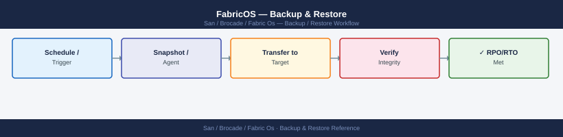

FabricOS — Backup & Restore¶

Before you begin¶
- Access: Storage admin credentials (cluster admin or equivalent)
- Timing: safe to run during business hours unless a step is marked ⚠ (causes interruption)
- Dependencies: no active upgrades or migrations on the same infrastructure
- Logging: capture command output — paste into the change record on completion
Backup and Restore Flow¶
Restore Notes¶
- The switch must be running a compatible FOS version before restoring a config — do not restore a FOS 9.x config onto a switch running FOS 8.x.
- After restore, some settings require a reboot to take effect (Virtual Fabric changes, for example).
- Zone configuration is restored but the zone set is not automatically activated. Run
cfgenable <zoneset-name>manually after confirming the zone database looks correct. - If restoring to a replacement switch, set the correct static domain ID before connecting to the fabric to avoid domain conflicts.
Zone Database Backup (cfgsave)¶
cfgsave writes the current in-memory zone configuration (including any unsaved changes) to the switch's persistent flash storage. Without cfgsave, zone changes are lost on reboot.
Saving configuration to flash...
Configuration saved successfully.
Zone Configuration:
Defined zone members: 128
Active zone set: production-zones
Zone set status: Active
Last update: 2024-01-15 14:32:18
Zone: zone_prod_01
Members: 2
- 50:00:09:73:00:1a:2b:3c (Storage_Array_01)
- 50:00:0c:5a:12:34:56:78 (Server_Host_01)
Zone: zone_prod_02
Members: 2
- 50:00:09:73:00:1a:2b:3d (Storage_Array_02)
- 50:00:0c:5a:12:34:56:79 (Server_Host_02)
Zone: zone_prod_03
Members: 3
- 50:00:09:73:00:1a:2b:3e (Storage_Array_03)
- 50:00:0c:5a:12:34:56:7a (Server_Host_03)
- 50:00:0c:5a:12:34:56:7b (Server_Host_04)
Common errors
cfgsave: command not found — Verify you are logged into the Brocade switch CLI (not the Linux shell) by checking the prompt shows switch> or switch#.
Configuration save failed: Flash memory full — Free up flash space by removing old configuration backups using cfgdelete or contact support if persistent.
The zone database is included in the configupload archive. However, always run cfgsave immediately after any zoning change — before running configupload — so that the backup captures the latest zone state.
Backup Schedule and Retention¶
| Trigger | Action |
|---|---|
| Pre-change (any maintenance window) | Manual configupload snapshot to dedicated pre-change directory |
| Weekly scheduled | Automated configupload via Ansible playbook or cron |
| Pre-firmware upgrade | Manual snapshot before and after upgrade |
| Post-zone change | Manual snapshot after confirming changes are correct |
Retention: - Daily backups: 30 days - Weekly backups: 6 months - Pre-change snapshots: retained until the change is closed and validated
Store backups on a server outside the SAN fabric (not relying on FC connectivity) — typically the OOB management or backup network.
Automated Backup with Ansible¶
The Ansible playbook in the Scripts page automates nightly configupload across all switches. Key steps:
- Ensure SSH key-based authentication is configured from the Ansible control node to each switch.
- Set the
backup_servervariable to the SCP server IP andbackup_pathto the destination directory. - Run the playbook nightly via cron or a scheduling tool:
PLAY [Brocade SAN Switches] *****************************************************
TASK [Gathering Facts] **********************************************************
ok: [switch-01.san.local]
ok: [switch-02.san.local]
ok: [switch-03.san.local]
TASK [Backup Fabric OS Configuration] *******************************************
changed: [switch-01.san.local]
changed: [switch-02.san.local]
changed: [switch-03.san.local]
TASK [Verify Backup Files] ******************************************************
ok: [switch-01.san.local]
ok: [switch-02.san.local]
ok: [switch-03.san.local]
PLAY RECAP **********************************************************************
switch-01.san.local : ok=3 changed=1 unreachable=0 failed=0
switch-02.san.local : ok=3 changed=1 unreachable=0 failed=0
switch-03.san.local : ok=3 changed=1 unreachable=0 failed=0
Common errors
[Errno 2] No such file or directory: 'inventory' — Verify the inventory file exists in the current directory or provide the full path with -i /path/to/inventory.
fatal: [switch-01.san.local]: UNREACHABLE! => {"msg": "Unable to open shell. SSH connection refused."} — Confirm SSH credentials are correct in the inventory file and that the switch management IP is reachable via ping or ssh -v.
fatal: [switch-02.san.local]: FAILED! => {"msg": "Unsupported parameters for module: brocade_config"} — Update the Ansible Brocade module to a compatible version using ansible-galaxy collection install brocade.fos or verify playbook syntax matches your installed module version.
Each switch backup is archived with a datestamp in the filename: <switchname>_config_20250507.cfg.
Manual Backup Procedure¶
Use this procedure before any change that touches the zone database, port configuration, or switch settings.
# Step 1 — Confirm switch is healthy
switchstatusshow
fabricshow
# Step 2 — Save zone database to flash
cfgsave
# Step 3 — Upload configuration to backup server
configupload -all -scp -host 10.0.0.5 -u svcbackup -f /backups/brocade/dc1-san-sw01_pre-change_20250507.cfg
# Step 4 — Note the filename and timestamp in the change record
# Step 5 — Confirm the file exists on the backup server before proceeding
Switch Status:
Power Supply A: OK
Power Supply B: OK
Temperature: 42°C (Normal)
Fan Status: OK
Memory Usage: 68%
Fabric Information:
Fabric Name: dc1-fabric
Switch Name: dc1-san-sw01
Switch IP: 10.0.1.42
Fabric ID: 100
Principal Switch: Yes
Member Count: 4
(no output — command completes silently)
Upload Progress:
Connecting to 10.0.0.5...
Authentication successful
Uploading configuration...
Transfer complete: 2.3 MB
Remote filename: /backups/brocade/dc1-san-sw01_pre-change_20250507.cfg
Timestamp: 2025-05-07 14:32:18 UTC
Common errors
cfgsave: Configuration save failed - insufficient flash space — Run spaceshow to verify available flash memory and delete old configs with cfgdelete if needed.
configupload: Connection timeout to 10.0.0.5 — Verify network connectivity to the backup server and confirm the SCP service is running with netstat -an | grep 22.
configupload: Authentication failed for user svcbackup — Confirm the backup server credentials are correct and the svcbackup user has write permissions on the /backups/brocade/ directory.
Restore Validation¶
After restoring a configuration (for example, after a switch replacement), run these checks to confirm the restore was successful.
# 1. Confirm zone database is correct
cfgshow # Zone sets, zones, and aliases should match pre-failure state
alishow # All expected aliases present
# 2. Activate the zone set if not automatically restored
cfgenable <zoneset-name>
cfgsave
# 3. Confirm all devices log back in
nsshow # All expected hosts and storage targets logged in
nsallshow # Check across all domains
# 4. Confirm fabric is healthy
fabricshow # All switches present, correct principal switch
islshow # All ISLs up and at correct speed
switchshow # All ports in expected state
# 5. Check host multipath from the host side
# VMware: esxcli storage nmp device list
# Linux: multipath -ll
Defined zone set: production_zoneset
Active zone set: production_zoneset
Number of zones: 12
zone: zone_esx_cluster_01; members: 50:00:144b:b0d1:2345 50:00:0b:1a2b:3c4d
zone: zone_esx_cluster_02; members: 50:00:144b:b0d1:5678 50:00:0b:1a2b:9e8f
zone: zone_db_san_01; members: 50:00:144b:b0d1:abcd 50:00:0b:1a2b:def0
...
Defined aliases: 24
alias: esx01_hba0; members: 50:00:144b:b0d1:2345
alias: esx02_hba0; members: 50:00:144b:b0d1:5678
...
Switch Index: 1 Fabric Id: 100 FC Router: No Fabric State: Online
Slot 0: 0 Brocade 6510 Serial: WZH2012345678 FW: v8.2.1c
Slot 1: 1 Brocade 6510 Serial: WZH2012345679 FW: v8.2.1c
Principal Switch: 1 (0x620000)
ISL Statistics:
Port 0/24: Online Speed: 16Gb State: OK
Port 0/25: Online Speed: 16Gb State: OK
Port 1/24: Online Speed: 16Gb State: OK
Port 1/25: Online Speed: 16Gb State: OK
Devices Logged In: 47
50:00:144b:b0d1:2345 esx01.prod.local
50:00:144b:b0d1:5678 esx02.prod.local
50:00:0b:1a2b:3c4d storage-array-01
...
Common errors
zone: <zoneset-name> not found — Verify the zone set name with cfgshow and use the exact name listed in the "Defined zone set" output.
Access denied: zone database is locked — Wait 30 seconds for any ongoing zone operations to complete, then retry cfgenable.
ISL port offline or degraded speed detected — Check physical cable connections and SFP transceivers on the offline ISL ports, then run islshow again to confirm recovery.
Switch Replacement — Config Restore¶
When replacing a failed switch with the same model:
- Boot the replacement switch in isolation (not connected to the fabric).
- Assign the static domain ID to match the original switch:
- Restore the configuration from the most recent backup:
- After configdownload completes, reboot the switch if prompted.
- Connect ISL cables to the core switch.
- Verify the switch joins the fabric:
- Activate the zone set if needed:
- Update the CMDB with the new serial number and verify the support contract is transferred.
Backup Integrity Check¶
Periodically verify that backup files are intact and restorable. For SCP-based backups, check that the file size is non-zero and the datestamp is current.
# On the backup server — list recent backups for a switch
ls -lh /backups/brocade/ | grep dc1-san-sw01
# Spot-check a backup file
head -20 /backups/brocade/dc1-san-sw01_config_20250507.cfg
# Expected: should begin with switch identity and FOS version comments
-rw-r--r-- 1 root root 2.3M May 07 2025 dc1-san-sw01_config_20250507.cfg
-rw-r--r-- 1 root root 2.3M May 06 2025 dc1-san-sw01_config_20250506.cfg
-rw-r--r-- 1 root root 2.3M May 05 2025 dc1-san-sw01_config_20250505.cfg
-rw-r--r-- 1 root root 2.2M May 04 2025 dc1-san-sw01_config_20250504.cfg
# FOS Configuration Backup
# Switch: dc1-san-sw01
# Serial Number: BRK2847001234
# Fabric OS Version: v9.1.1a
# Backup Date: 2025-05-07 03:15:22 UTC
# Domain ID: 1
#
# Port Configuration
portcfg --show
portname 0/0 "ISL_to_dc2-san-sw01"
portname 0/1 "Storage_Array_Port_1"
portname 0/2 "Storage_Array_Port_2"
portname 0/3 "Host_Server_01"
Common errors
ls: cannot access '/backups/brocade/': No such file or directory — Verify the backup mount path is correct and the NFS/SMB share is mounted with mount | grep backups.
head: /backups/brocade/dc1-san-sw01_config_20250507.cfg: Permission denied — Check file permissions with ls -l and ensure the backup user has read access, or run with sudo.
A valid config backup file begins with a comment block identifying the switch hostname, serial number, FOS version, and backup timestamp. If the file is empty or contains only error messages, the backup failed and must be re-run.
Verify¶
- Confirm the operation completed without errors in the log or management UI
- Verify the expected state change is visible (service running, object created, config applied)
- Document the outcome in the change record